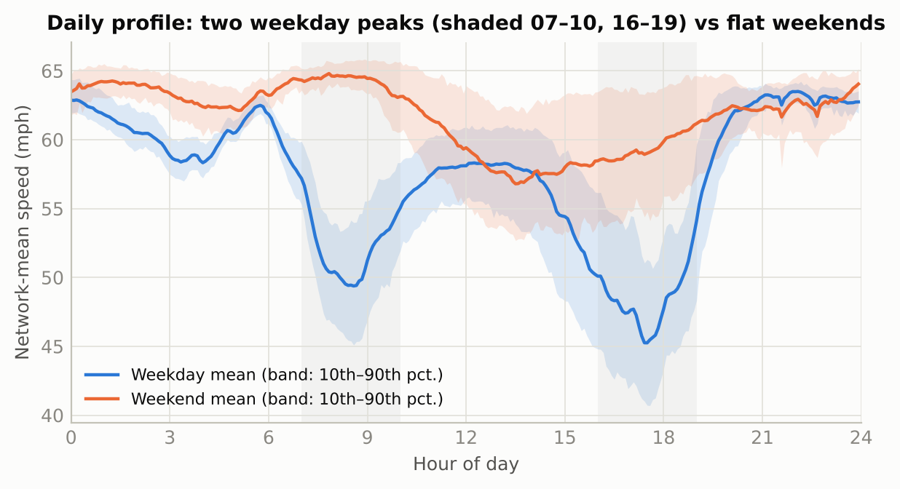
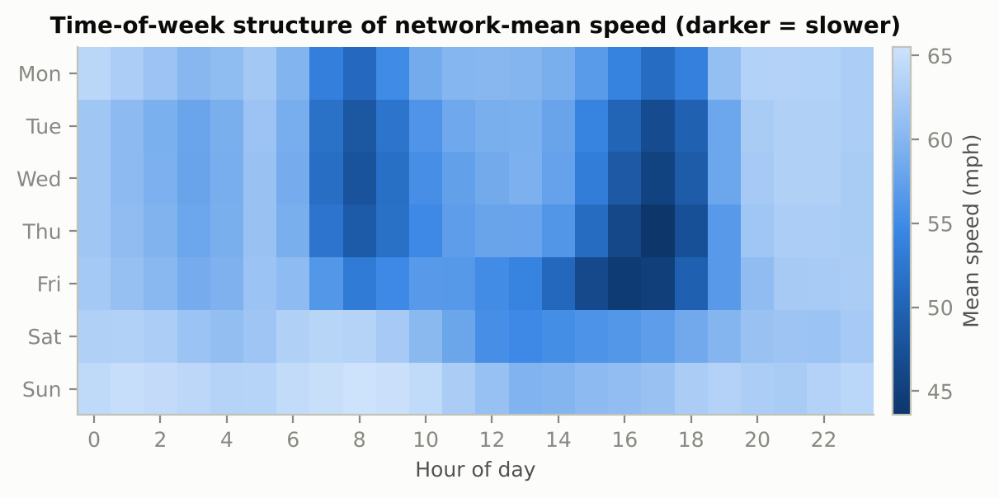
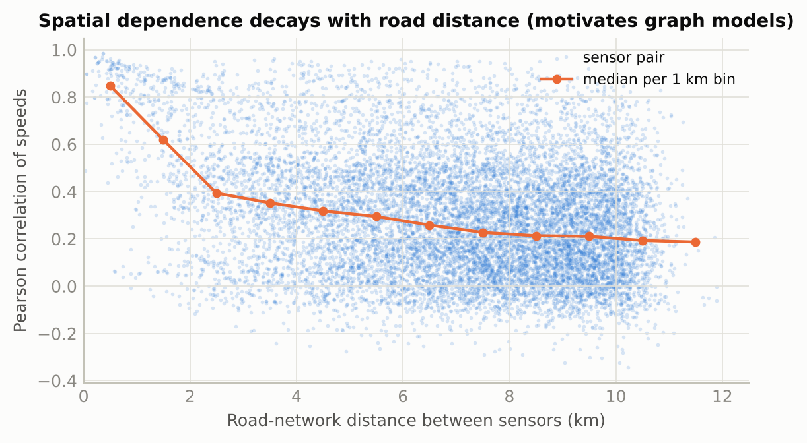
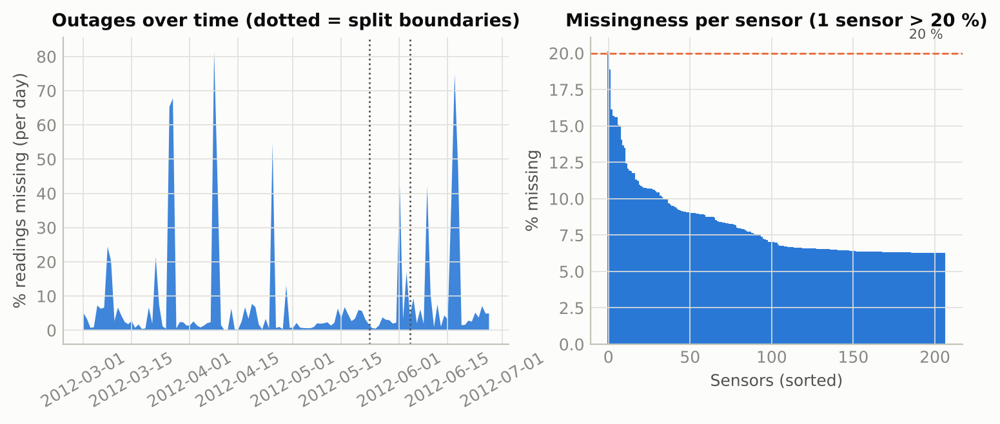
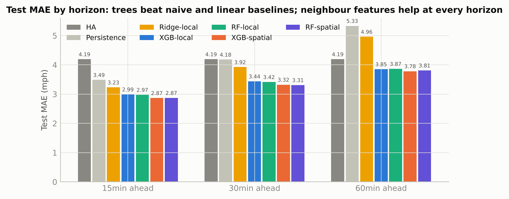
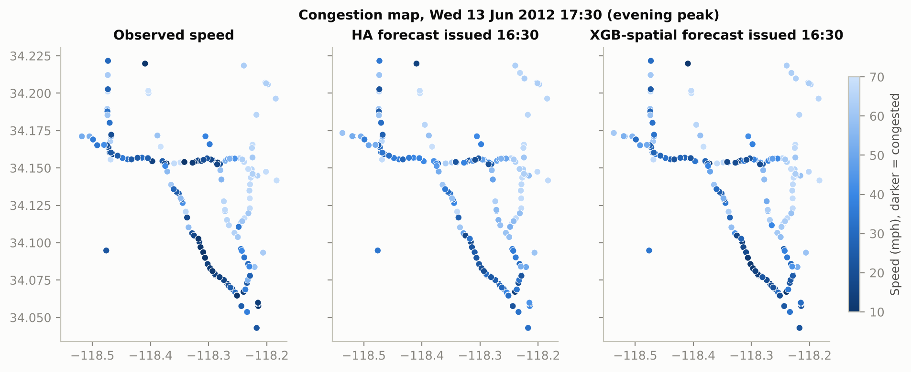

Phase 1 Report · Advanced Machine Learning & Deep Learning (CSAI)
Project 4 · Multi-Agent Traffic Flow Control via Graph Attention Networks and LWR Models
Team T082 · Section B · Kartik Madaan, Arhan Alam, Chirag Lalwani, Siddhanth Sadshiv Raikar, Abhijeet Dey
Newton School of Technology, Rishihood University · October 2026
We tried to predict how fast traffic will be moving at each of 207 highway sensors in Los Angeles, 15, 30 and 60 minutes from now, using the last hour of sensor readings, the clock, and what the neighbouring sensors are doing.
What we found, in five points:
Traffic has been modelled as a fluid since the 1950s: Lighthill and Whitham (1955) and Richards (1956) showed that cars are conserved along a road and that disturbances travel as waves — forwards when the road is empty, backwards when it is congested. Short-term forecasting has a long history of statistical models (Vlahogianni et al., 2014), with two simple predictors — "the usual speed" and "the speed stays the same" — remaining the yardsticks every method is judged against. Tree ensembles such as gradient boosting beat linear models for travel-time prediction (Zhang & Haghani, 2015). The decisive step in recent years was to treat the sensors as a graph: DCRNN (Li et al., 2018) released the METR-LA benchmark we use, and graph attention models (Veličković et al., 2018; Zhang et al., 2019) let the model learn how much to listen to each neighbour. On testing, Bergmeir and Benítez (2012) show that ordinary cross-validation is invalid for time series and that one must split by time. Phase 1 uses only classical models; its job is to build the baseline and the honest test bench that the Phase 2 graph model will be compared against.
METR-LA is one big table: 34,272 rows (one per five-minute slot over 119 days) and 207 columns (one per sensor). Each cell is the average speed in miles per hour. There are no missing rows: every five-minute slot from 1 March to 27 June 2012 is present.
It comes with a road map: where each sensor is, the driving distance between sensor pairs, and from those an adjacency matrix that says how strongly each sensor is linked to each neighbour (nearer = stronger; links longer than a cut-off are dropped). We rebuilt this matrix from the raw distance table and checked that it matches the published one exactly. The graph has 1,515 directed links, about 7 neighbours per sensor, and one sensor with no neighbours.
What one example looks like. For one sensor at one moment, we describe the situation with 34 input numbers (Section 5) and the answers are the speed at that sensor 15, 30 and 60 minutes later.
8.1% of all cells contain exactly 0 mph. A highway never averages exactly zero over five minutes, so these are not jams — they are sensors that were switched off. Three things confirm it:
So we relabel every 0 as "unknown". Nothing is deleted: the table keeps all its rows and columns, and the worst sensor (20% unknown) is kept. Nothing is invented either: we do not fill the gaps with guessed values, because the long runs would carry stale readings through rush hours, and guessed answers would corrupt the scoring. The tree models accept unknown inputs directly; an example whose answer is unknown is simply skipped, both in training and in scoring (the same convention as the DCRNN paper).
After this cleaning the speeds have a mean of 58.5 mph and a median of 63.2 mph; 9.0% are below 35 mph, the threshold Caltrans uses for "congested". The distribution has two humps — free flow around 65 mph and a congested mode around 20–30 mph — which is the two-regime picture from traffic physics showing up in the data.
We cut the four months by date, never by shuffling, with a one-hour gap at each boundary so that no training answer lies inside the test period:
| Group | Slots | Dates | Used for |
|---|---|---|---|
| Train | 23,967 | 1 March – 23 May | Teaching the models |
| Validation | 3,403 | 23 May – 4 June | Deciding when to stop training (nothing else) |
| Test | 6,831 | 4 – 27 June | Final check, used once |
| Step | Train | Validation | Test |
|---|---|---|---|
| 1. Five-minute time slots | 23,967 | 3,403 | 6,831 |
| 2. Readings (slots × 207 sensors) | 4,961,169 | 704,421 | 1,414,017 |
| 3. Exactly 0 mph → marked unknown | −353,732 (7.1%) | −49,317 (7.0%) | −171,637 (12.1%) |
| 4. Inputs per example: 34 numbers (26 about the sensor itself + 8 about its neighbours) | |||
| Examples whose answer (speed 60 min later) is known | 4,607,444 | 655,115 | 1,242,308 |
| …of which jammed (below 35 mph) | 8.6% | 8.7% | 10.3% |
Two things to notice:
"Leakage" means the model sees information it would not have in real life, which makes its score look better than it really is. We took six steps against it:
Two of our eight automated tests check this directly: that no test sample's input window reaches into the training targets, and that the "usual speed" profile does not change when the test data is altered.
| Measurement | Off-peak | Weekday rush hour | Weekend |
|---|---|---|---|
| Mean speed (mph) | 59.6 | 50.1 | 61.7 |
| Spread of speeds, standard deviation (mph) | 10.6 | 18.5 | 10.6 |
| Readings below 35 mph ("jammed") | 5.2% | 26.5% | 5.0% |
| Sensors jammed at 17:00 on a weekday | — | 35% | — |
Rush hour = weekdays 07–10 and 16–19. The average speed drops by about 10 mph, the spread almost doubles, and the share of jammed readings goes from 5% to 26%. Weekends look like off-peak all day. The evening peak is deeper than the morning one.


"r" (correlation) is a number from −1 to +1 that shows how much two things move together; 0 means no link.
| Pair | r | What it means |
|---|---|---|
| A sensor's speed & its own speed one hour earlier | 0.84 | The last hour is a strong input |
| A sensor's speed & its own speed 24 hours earlier | 0.64 | A daily cycle: "the usual speed" is a strong input |
| Two sensors under 1 km apart (by road) | 0.85 | Close neighbours move together |
| Two sensors 5–6 km apart | 0.29 | The link fades with distance… |
| Two sensors 10–11 km apart | 0.19 | …so only the near neighbourhood is informative |
These match real-world physics (Section 5), which tells us the data is trustworthy. Each sensor also has its own personality: congestion returns every weekday, but its depth and timing differ from sensor to sensor. That is why we train one model per sensor.


A model learns from examples of the form "situation → what happened next". For every sensor at every five-minute slot we describe the situation with 34 numbers, in five groups:
| Group | Feature(s) | How we made it | Why |
|---|---|---|---|
| A · own history | lag_0 … lag_11 (12) | The sensor's speed now and in each of the previous 11 slots | The last hour is 84% correlated with the next |
| B · summary | win_mean, win_std, win_min, win_max, win_frac_missing, trend_15min (6) | Mean, spread, min and max of that hour; share of it unknown; change over the last 15 min | Tells the model whether speed is steady, falling, or unreliable |
| C · the clock | tod_sin, tod_cos, dow_sin, dow_cos, is_weekend, hour (6) | Time of day and day of week as sine/cosine pairs, plus a weekend flag and the hour | 23:55 and 00:05 should look close; Sunday should sit next to Monday |
| D · usual speed | ha_now, dev_from_ha (2) | Average speed of this sensor at this time of week (training weeks only); current speed minus that | "Normal for a Tuesday at 5 pm", and how far from normal we are now |
| E · neighbours | up_mean ×3, down_mean ×3, nbr_min, nbr_frac_congested (8) | Weighted average speed of upstream and of downstream neighbours now, 5 and 10 min ago; slowest neighbour; share of neighbours below 35 mph | Jams travel between sensors (below) |
| — | speed +15, +30, +60 min | The same table, shifted forward in time | The answers we want to predict |
The brief mentions flow and occupancy as possible inputs; the public METR-LA release contains speed only, so every feature is built from speed. Through the speed–density relation, speed is a proxy for density, so most of the information about the traffic regime is still there.
Think of a queue at a ticket counter: new people join at the back, so the queue grows backwards. A traffic jam does the same. In the Lighthill–Whitham–Richards (LWR) model, cars are conserved along the road, and speed falls as the road gets denser (Greenshields, 1935). A small disturbance then travels at the wave speed c(ρ) = vf(1 − 2ρ/ρj), where vf is the free-flow speed and ρj the density at which nothing moves. When the road is emptier than half the jam density, c is positive and information moves forward with the cars; when it is more congested, c is negative and information moves backwards, against the cars. The tail of a real jam moves upstream at about 15–20 km/h (Treiber & Kesting, 2013).
Three decisions follow:
| Feature set | What it contains | Number of features |
|---|---|---|
| Local | Groups A–D: what the sensor knows about itself | 26 |
| Spatial | Local + group E: the neighbours | 34 |
Every learned model is trained twice, once with each set. Same rows, same split, same settings — the only difference is the eight neighbour columns. That is what makes the comparison in Section 7 a fair measurement of what the neighbours are worth.
We trained five models, from the simplest to the most powerful. Each one answers one question.
| Model | What it does | The question it answers |
|---|---|---|
| Historical average | Predicts the sensor's usual speed at this time of week. No learning. | How far does "the usual" get you? |
| Persistence | Predicts the speed stays what it is now. No learning. | How far does "right now" get you? |
| Ridge regression | Gives each input a weight and adds them up (a straight line); a penalty keeps the weights small. | Is a simple linear model enough? |
| XGBoost | Builds many small decision trees one after another, each fixing the last one's mistakes. | Do combinations of clues help ("5 pm and speed dropping and the sensor ahead is slow")? |
| Random Forest | Builds 100 trees on random samples of the data and averages them; one forest predicts all three horizons at once. | Is XGBoost's result just one method's quirk? |
One model per sensor. Sensors have different personalities, so we train a separate model for each of the 207 sensors (and, for XGBoost, one per sensor per horizon: 621 models, about 12 minutes on two CPU cores).
Settings were chosen in advance from standard practice, not tuned on the test set. XGBoost: tree depth 6, learning rate 0.05, at least 5 examples per leaf, 80% of rows and columns per tree, squared-error loss, at most 600 trees with early stopping — stop when the validation error has not improved for 40 trees. On average only 129 of the 600 trees were kept, so the models are not over-fitting. Random Forest: 100 trees, depth at most 14, at least 5 examples per leaf, half the features considered at each split. Ridge: penalty α = 1, inputs standardised, unknown inputs filled with the sensor's usual speed (the only model that needs filling).
Both tree libraries accept unknown inputs: at every split, the tree learns which way to send a missing value. That is why the masked outages need no filling.
With x the true speed and x̂ the prediction, over all test examples whose true speed is known:
Why not accuracy? For the jam detector, about 90% of answers are "free-flowing". A model that always says "free" gets 89.7% accuracy while catching zero jams. Accuracy hides failure on rare events; MAE, precision and recall do not.
| Model | MAE 15 min | MAE 30 min | MAE 60 min | Result |
|---|---|---|---|---|
| Historical average | 4.32 | 4.32 | 4.30 | Same at every horizon: ignores the present |
| Persistence | 3.21 | 3.80 | 4.75 | Great at 15 min, poor at 60: ignores the usual |
| Ridge (local) | 3.10 | 3.82 | 4.87 | A straight line is not enough |
| XGBoost (local) | 2.85 | 3.31 | 3.75 | Combines "now" and "usual" |
| XGBoost (spatial) | 2.70 | 3.16 | 3.63 | Best → used on test |
| Random Forest (local) | 2.86 | 3.32 | 3.79 | Same story as XGBoost |
| Random Forest (spatial) | 2.73 | 3.16 | 3.69 | A tie with XGBoost |
XGBoost with neighbour features was the best model on validation, and the Random Forest with neighbour features was 0.03–0.06 mph behind. Both beat the linear model by a wide margin at 60 minutes, which tells us the "if this and that" interactions matter. The ranking is the same on the test set below, which is the evidence that nothing was tuned on the test data.
| Model | 15 min | 30 min | 60 min | RMSE 60 min | MAPE 60 min |
|---|---|---|---|---|---|
| Historical average | 4.19 | 4.19 | 4.19 | 7.86 | 13.1% |
| Persistence | 3.49 | 4.18 | 5.33 | 10.27 | 14.4% |
| Ridge (local) | 3.23 | 3.92 | 4.96 | 8.44 | 15.1% |
| XGBoost (local) | 2.99 | 3.44 | 3.85 | 7.26 | 11.6% |
| XGBoost (spatial) | 2.87 | 3.32 | 3.78 | 7.07 | 11.2% |
| Random Forest (local) | 2.97 | 3.42 | 3.87 | 7.25 | 11.7% |
| Random Forest (spatial) | 2.87 | 3.31 | 3.81 | 7.06 | 11.3% |
| DCRNN (Li et al., 2018), published deep graph model on the same data | 2.77 | 3.15 | 3.60 | 7.60 | 10.5% |
Three things stand out. The two yardsticks bracket the problem: persistence is excellent at 15 minutes but collapses by 60; the historical average is the same at every horizon. The learned models combine both ideas and win: at 60 minutes XGBoost (local) is 8% better than the historical average, 28% better than persistence and 22% better than Ridge. XGBoost and the Random Forest are a tie (0.01 mph apart; the forest has the slightly lower RMSE), so the choice between them is about training time — XGBoost is three times faster — not accuracy.

Same learner, same rows, same settings — the only change is the eight neighbour columns:
| Comparison | 15 min | 30 min | 60 min |
|---|---|---|---|
| XGBoost: MAE reduction from adding neighbour features | −4.1% | −3.3% | −1.8% |
| Random Forest: the same comparison | −3.4% | −3.1% | −1.4% |
| XGBoost at 60 min, rush hour only | −3.2% | ||
| XGBoost at 60 min, off-peak only | −1.1% | ||
| Sensors whose 60-min error improved | 147 of 207 (up to −7.2%) |
The gain is there at every horizon and for both learners, so it is a property of the information, not of one algorithm. It is three times larger in rush hour than off-peak — the signature of congestion spreading between sensors. And it is largest at short horizons and smallest at 60 minutes, which is exactly what the physics predicts for one-hop features: a jam tail moving at 15–20 km/h crosses the 1–3 km to the next sensor in 5–15 minutes, so the neighbours' current state says most about the next 15–30 minutes, while what determines a sensor an hour ahead is still several hops away.
| Model | Rush hour | Off-peak | Rush ÷ off-peak |
|---|---|---|---|
| Historical average | 6.53 | 3.60 | 1.8× |
| Persistence | 7.79 | 4.71 | 1.7× |
| Ridge (local) | 7.64 | 4.28 | 1.8× |
| XGBoost (local) | 5.86 | 3.34 | 1.8× |
| XGBoost (spatial) | 5.67 | 3.31 | 1.7× |
| Random Forest (spatial) | 5.73 | 3.33 | 1.7× |
Every model's error roughly doubles in the peaks (weekdays 07–10 and 16–19). Almost all of the extra error is in jammed traffic below 35 mph; above it, even persistence is close to the best model. Rush hour is where the forecast matters most and where there is most left to gain.
| Real jam | Real free-flowing | |
|---|---|---|
| Model said jam | 78,082 (caught) | 13,604 (false alarms) |
| Model said free | 50,475 (missed) | 1,100,147 (correct) |
Precision 0.85 (when it says jam, it is right 85% of the time), recall 0.61 (it catches 61% of the jams an hour ahead), F1 0.71 — against F1 0.64 for both the historical average and persistence. Model accuracy is 94.8%; always saying "free" would score 89.7%, which is why accuracy is not the headline. Recall is the hard part: a jam that has not yet reached a sensor is invisible in that sensor's own history, which is exactly the information a graph model would carry over.

| Input | Share of importance | What it is |
|---|---|---|
lag_0 | 23% | The speed right now |
down_mean_lag0 | 8% | Speed of the downstream neighbours (the sensors ahead) right now |
ha_now | 7% | The usual speed at this time of week |
win_mean | 6% | Average of the last hour |
up_mean_lag0 | 6% | Speed of the upstream neighbours right now |
nbr_frac_congested | 5% | Share of neighbours that are jammed |
hour, is_weekend, tod_cos, tod_sin | 14% | The clock |
| All eight neighbour features together | 26% | The model does use the neighbourhood, and the sensors ahead most — as the physics predicts |
Importance = share of XGBoost's split gain, averaged over all 207 sensors and 3 horizons.
Adding eight neighbour numbers to the same XGBoost lowers the error at every horizon, for 147 of 207 sensors, and three times more in the peaks than off-peak. The model's second most-used input is the downstream neighbours. Congestion really does spread between sensors, and a model that looks only at one sensor misses it.
The published graph models beat single-sensor models by margins that grow with the horizon; our hand-built one-hop features help least at 60 minutes. The two facts agree: what matters an hour ahead is several hops away, along paths whose importance changes with the time of day — something a multi-layer, attention-weighted network can represent and a fixed one-hop average cannot. Our measurement is a lower bound on the value of network information, and the horizon at which it fades is where a Graph Attention Network should add the most.
Error doubles in the peaks and sits almost entirely below 35 mph. The jam detector catches 61% of jams an hour ahead: the ones it misses have not yet reached the sensor's own history. Free-flowing traffic is easy — "the speed stays the same" is already nearly the best forecast there.
0.01 mph apart on the test set; the forest has the slightly lower RMSE; XGBoost trains three times faster. We did not run a significance test, so we do not claim one is better.
Split by date with a gap; settings fixed in advance; the validation weeks rank the models in exactly the same order as the test weeks; early stopping kept about 130 of 600 trees. One command reruns everything from the raw file to every figure and every results table this report quotes, and eight automated tests check the split, the features and the scoring.
For the jam detector, "always free" scores 89.7% accuracy. We report MAE in mph, precision and recall instead.
While checking our work, we found four problems and fixed them before producing the final numbers:
| Member | Enrollment | Work |
|---|---|---|
| Kartik Madaan | 2401010212 | Data pipeline: acquisition, outage masking, road-graph construction, repository and reproducibility; exploratory data analysis and figures |
| Arhan Alam | 2401020010 | Feature engineering, LWR-motivated neighbour features, chronological split and leakage tests |
| Chirag Lalwani | 2401020093 | Model training: per-sensor XGBoost with early stopping, multi-output Random Forest, Ridge, settings |
| Siddhanth Sadshiv Raikar | 2401020110 | Models (baselines, training runs, validation evidence) and the report: literature review, assembly and editing |
| Abhijeet Dey | 2401010014 | Evaluation and results: masked metrics, rush hour vs off-peak, the neighbour ablation, jam detection and congestion maps |
All members reviewed every component and can present and defend the full pipeline.
Code: github.com/<your-account>/traffic-flow-phase1 — one command (run_all.sh) reruns data → analysis → models → figures → results tables.
| Term | Simple meaning |
|---|---|
| Sensor / reading | A loop detector buried in the road; every five minutes it reports the average speed of the cars over it |
| Horizon | How far ahead we predict: 15, 30 or 60 minutes |
| Train / validation / test | Data to learn from / data to decide when to stop training / data for the final, one-time check |
| Leakage | When the model sees information it would not have in real life, making its score look too good |
| Unknown (NaN) | A reading we do not trust (the sensor was offline); it is skipped, never counted as 0 |
| Masked | Scoring only the cells whose true speed is known |
| MAE / RMSE / MAPE | Average mistake in mph / the same but punishing big misses more / the mistake as a percentage |
| Historical average | The usual speed of this sensor at this time of week |
| Persistence | "The speed stays what it is now" |
| Lag | A past value: lag 3 = the reading 15 minutes ago |
| Feature | A number the model uses as input |
| Local / spatial | Inputs about the sensor itself only / those plus inputs about its neighbours |
| Upstream / downstream | The sensors behind you (traffic comes from there) / the sensors ahead of you (traffic goes there) |
| LWR model | The 1955 theory that treats traffic like a fluid; it predicts that jams grow backwards |
| Early stopping | Stop adding trees when the validation error stops improving |
| Feature importance | How much the trained model relies on each input |
| Jam | Speed below 35 mph (the Caltrans definition of congested) |
| Precision / recall / F1 | Of the jams we called, how many were real / of the real jams, how many we caught / one number combining both |
| Ablation | Removing one thing (here, the neighbour features) to measure what it was worth |